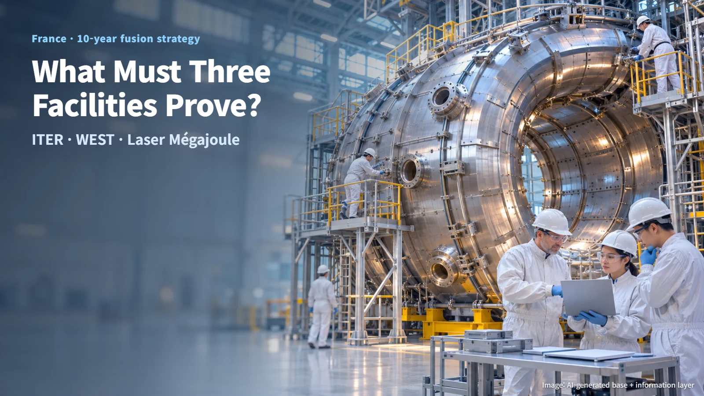
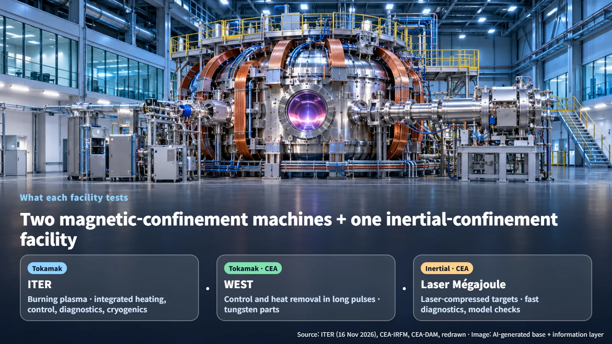
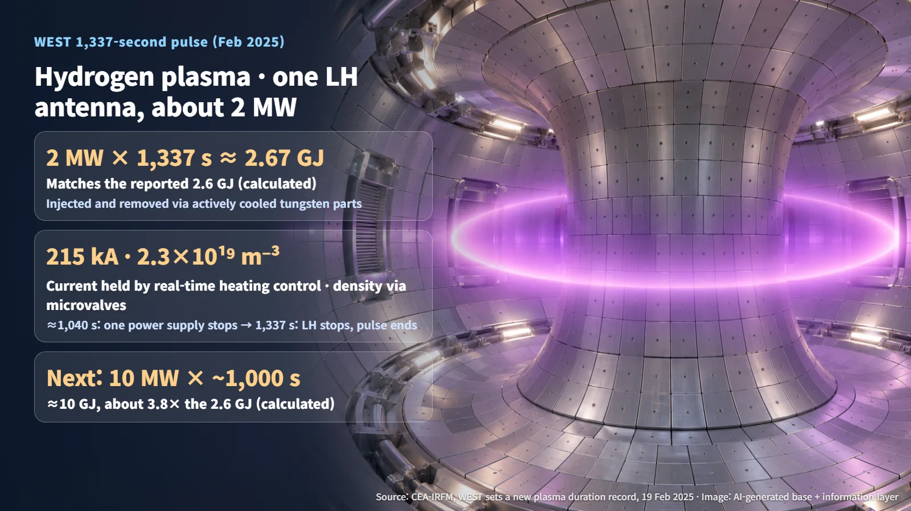
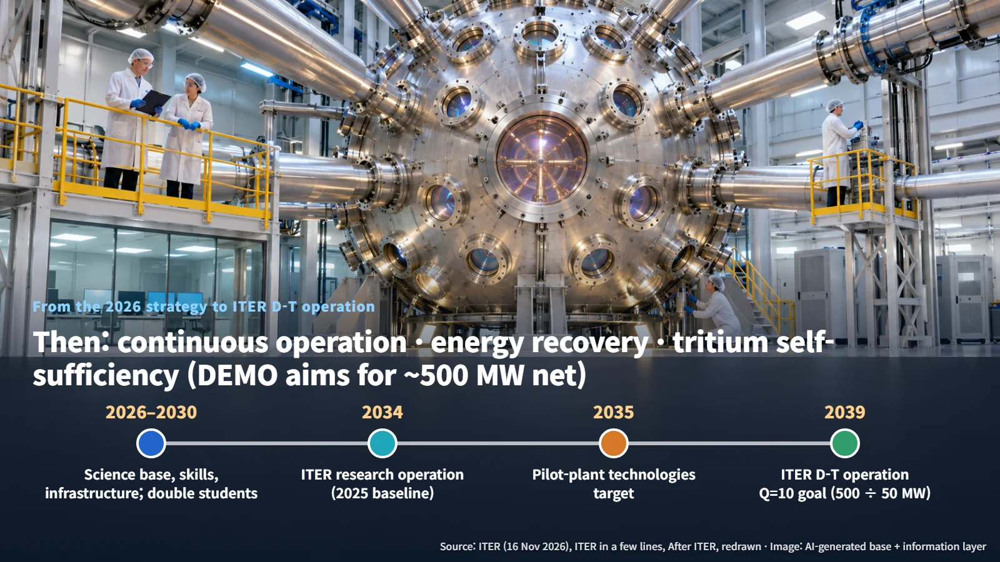

France · Fusion · Strategy
France's 10-Year Fusion Strategy: What ITER, WEST and the Laser Mégajoule Each Have to Prove
France's 10-year fusion strategy builds on ITER, the WEST tokamak and the Laser Mégajoule, strengthening research and skills through 2030 and targeting the technologies a European pilot plant needs by 2035.
Every piece of fusion news seems to raise the same question: when will fusion electricity actually reach the grid? The 10-year fusion strategy France announced on November 16 answers that question in stages. Three experimental facilities each take on a different question, and their results feed one goal: having the technologies needed for a European pilot fusion plant by 2035.

The 10-Year Strategy Announced on November 16: Foundations to 2030, Technologies by 2035
Philippe Baptiste, France's Minister for Higher Education, Research and Space, presented the national fusion strategy on November 16, 2026, during a visit to ITER and to the WEST tokamak operated by CEA (the French Alternative Energies and Atomic Energy Commission). The strategy rests on three facilities: ITER, the international project located in France; CEA's WEST tokamak; and the Laser Mégajoule (LMJ).
Fusion is the reaction in which light nuclei join together and release energy. Keeping a deuterium-tritium fuel burning takes three things at once: very high temperature, enough particle density, and enough time holding the energy in place. ITER and WEST are tokamaks, devices that hold a hot plasma inside a doughnut-shaped chamber with magnetic fields. The Laser Mégajoule uses powerful lasers to compress a tiny target in an instant, an approach called inertial confinement.

The timeline has two stages. From 2026 to 2030, France plans to strengthen its scientific and technical base, its specialist workforce, its experimental infrastructure and its funding. The target for 2035 is to secure the technologies required for a European pilot plant. The plan also sets a goal of doubling the number of students in related fields such as plasma physics, nuclear engineering and cryogenics. The strategy is at the announcement stage; the next step is turning it into specific research projects, budgets and training programs. The strategy ties the three facilities to a single objective, so each experiment knows what data it must hand on to a pilot plant.
ITER: Burning Plasma and Q=10
ITER aims to produce 500 MW of fusion power from 50 MW of external heating. That ratio is called Q, the plasma energy gain: Q = fusion power ÷ external heating input. The calculation is simple: 500 MW ÷ 50 MW = 10. In other words, the target is ten times more fusion power than the heating power put in.
Q=10 matters because it represents a burning plasma. In this state, particles created by the fusion reactions do a large share of the heating themselves, much like a log fire that keeps going once it has properly caught, without a match held to it. ITER will study that state while running its heating, control and measurement systems together as one integrated machine. It will also test integrated technologies such as cryogenic cooling, superconducting magnets and remote maintenance. Tests of lithium-based tritium breeding modules (the "blanket") are planned as well, providing experimental data for the technology a power plant will need to produce its own fuel.
According to the 2025 updated baseline described on ITER's official site, research operation starts in 2034 and deuterium-tritium operation starts in 2039. Q=10 describes the energy balance inside the plasma; electricity production and fuel self-sufficiency are set out as tasks for the stage after ITER.
WEST: An Experiment That Managed Plasma and Heat for 1,337 Seconds
CEA announced on February 12, 2025, that WEST had sustained a hydrogen plasma for 1,337 seconds. That works out to roughly 22 minutes (1,337 ÷ 60 ≈ 22.3). About 2 MW was injected through a single lower hybrid (LH) antenna; LH heating accelerates electrons to drive the plasma current. Real-time heating adjustments held the plasma current at 215 kA, and hydrogen injected through piezoelectric micro-valves kept the density at 2.3×10¹⁹ m⁻³.
Running the energy numbers shows what kind of experiment this was. 2 MW × 1,337 s = 2,674 MJ, which calculates to about 2.67 GJ. That is the same scale as the 2.6 GJ of injected and extracted energy CEA reported (the 2 MW figure is approximate, so the match is close rather than exact). Energy put into the plasma ultimately leaves through the walls, so the actively cooled tungsten plasma-facing components, the wall parts that look directly at the plasma, absorbed that much heat over 22 minutes.

The experimental record also shows what long-pulse operation demands. At about 1,040 seconds, one of the heating antenna power supplies stopped and the plasma state changed; at 1,337 seconds, the LH system shut down and the experiment ended. Records of events like these feed directly into the next test plan.
CEA's next goal is to raise the heating power from 2 MW to 10 MW for about 1,000 seconds. By calculation, 10 MW × 1,000 s = 10,000 MJ = 10 GJ, roughly 3.8 times the 2.6 GJ handled this time (10 ÷ 2.6). The pulse is somewhat shorter, yet the tungsten components would have to handle nearly four times the energy. That is why the plan pairs improved confinement operation and adjusted control methods with high-load lifetime testing of the tungsten components.
The Laser Mégajoule and the Tasks Beyond 2035
The Laser Mégajoule is an inertial confinement fusion (ICF) research facility that concentrates powerful laser energy onto millimetre-sized targets. Where a tokamak holds its plasma for a long time, this facility compresses a target in an extremely short instant. Its experimental data are used to validate theoretical models.
Watching that compression requires diagnostics that can resolve very fast changes. The streak camera CEA describes converts light into electrons at a photocathode, then accelerates and focuses those electrons onto a phosphor screen and detector, producing X-ray as well as visible and near-ultraviolet images. One research task is to understand, through experiments and numerical simulation, how the space-charge effect (the electrical interaction among electrons in the beam) changes focusing performance. At the Laser Mégajoule, the time and space resolution of the measuring instruments is itself part of what gets validated.
| Facility | Confinement approach | Question it tests | Headline indicator | |---|---|---|---| | ITER | Magnetic (tokamak) | Burning plasma and integrated operation of many technologies | Q=10 target (50 MW → 500 MW) | | WEST | Magnetic (tokamak) | Long-duration control and heat removal | 1,337 s, 2.6 GJ | | Laser Mégajoule | Inertial | Evolution of laser-compressed targets and diagnostic performance | Time- and space-resolved diagnostics |
(Source: adapted from ITER, "ITER in a few lines"; CEA-IRFM, "WEST sets a new plasma duration record"; CEA-DAM materials)
Laid out on a single line, the sequence runs: 2026–2030 foundation-building → 2034 start of ITER research operation → 2035 technology-readiness target → 2039 start of ITER deuterium-tritium operation. The year 2035 is a technology-readiness target, and verification with a burning plasma continues through ITER operation from 2039 onward.

The step after that is a demonstration power plant. The tasks set out for the post-ITER stage are continuous or near-continuous operation, efficient energy recovery, electricity production and tritium fuel self-sufficiency. The European DEMO concept targets about 500 MW of net electricity and tritium self-sufficiency. ITER's 500 MW is fusion power inside the plasma; DEMO's 500 MW is net power a plant would deliver, which makes it the next rung up.
The answer to "when will fusion power arrive?" lies less in a single year than in the order in which each facility's data accumulates. The news to watch next is France's announcement of the research projects, budgets and training plans that run through 2030, and the results of WEST's long-pulse tests at 10 MW.